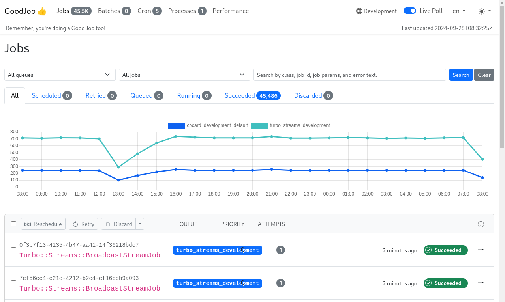
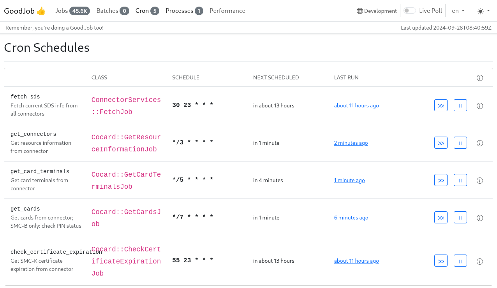
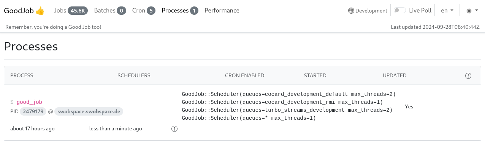
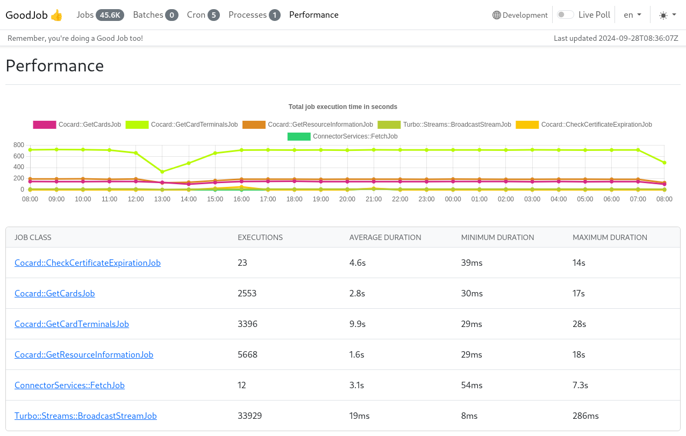

Jobverwaltung
Cocard nutzt für die Jobverwaltung GoodJob, das neben einem Webfrontend für die Jobverwaltung auch die zeitgesteuerte Jobs - sogenannte Cron-Jobs - ermöglicht.
Job-Übersicht
In die Jobverwaltung gelangt man über das Menü Jobs. Hierfür ist die Rolle Admin erforderlich.
In der Jobübersicht sollte man insbesondere die Werte bei Queued und Discarded im Auge behalten. Discarded Jobs sind abgebrochene Jobs, die auf einen Fehler hindeuten. Der Wert bei Queued sollte konstant klein oder eher 0 sein. Steigt der Wert über einen längeren Zeitraum ist das ein Hinweis auf Probleme in der Abarbeitung der einzelnen Jobs.

Zeitgesteuerte Jobs
Welche Jobs regelmäßig von Cocard ausgeführt werden erfährt man in der Übersicht Cron Schedules. Die Darstellung der Ausführungszeiten folgt dem klassischen Cron-Schema (Minute - Stunde - Tag- Monat- Wochentag)

Einzelne Cron-Einträge kann man über die Symbole am Ende jeder Zeile auch manuell anstoßen oder die Ausführung pausieren.
Prozesse
Die Queues von Cocard werden aus Performancegründen parallel in mehreren Pools ausgeführt. Die Konfiguration erfolgt über folgende Zeile in cocard-worker.container:
Exec=bundle exec good_job start \ --queues="cocard_production_default:4;cocard_production_rmi:1;turbo_streams_production:2;*:1"
Ob alle Pools ausgeführt werden sieht man in der Prozess-Übersicht:

Performance
In der Performance-Übersicht erhält man die durchschnittliche Ausführungszeit. Werte über einer Minute sind problematisch und deuten auf Engpässe von Ressourcen hin. Gründe könnten sein: Fehlkonfiguration (Cocard versucht Konnektoren oder Kartenterminals abzufragen, die alle nicht erreichbar sind), zu geringe parallele Ausführung von Jobs (Threads und Pools vergrössern) oder generell zu wenig Ressourcen an CPU und Speicher im Host.
